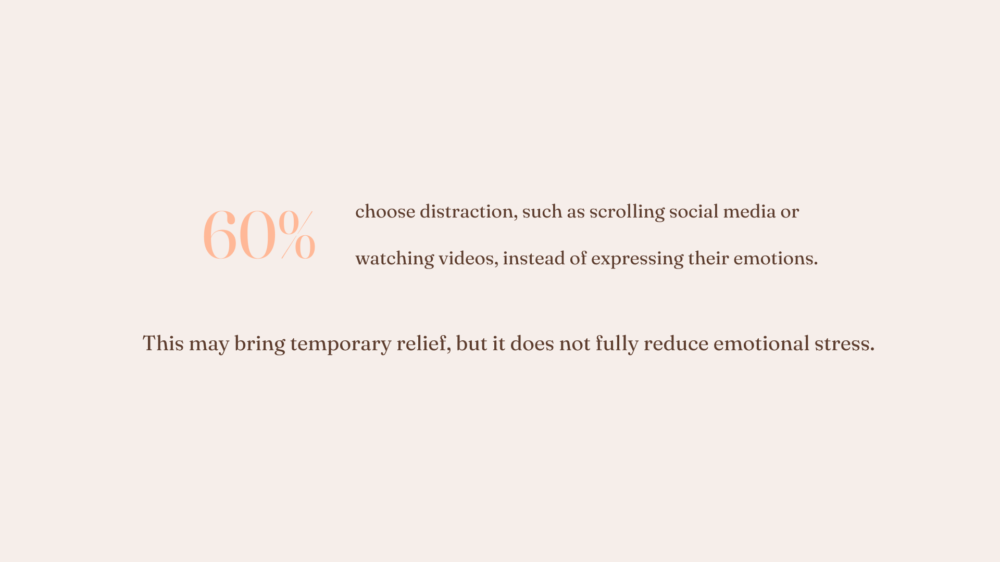
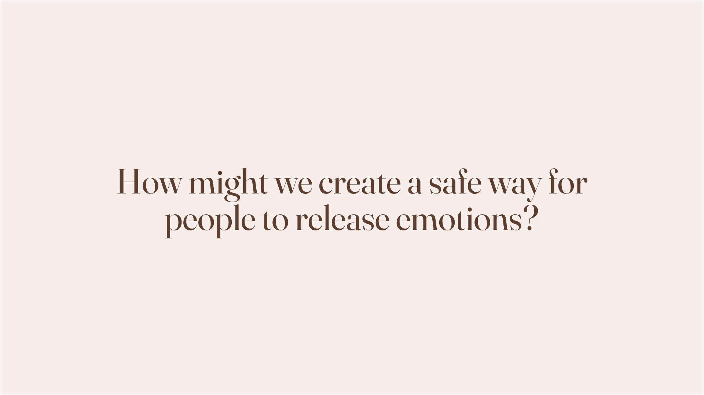
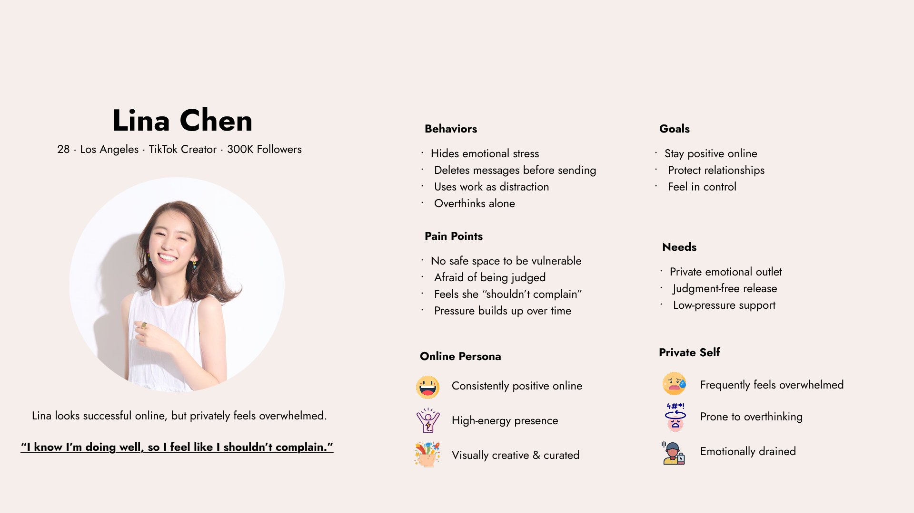
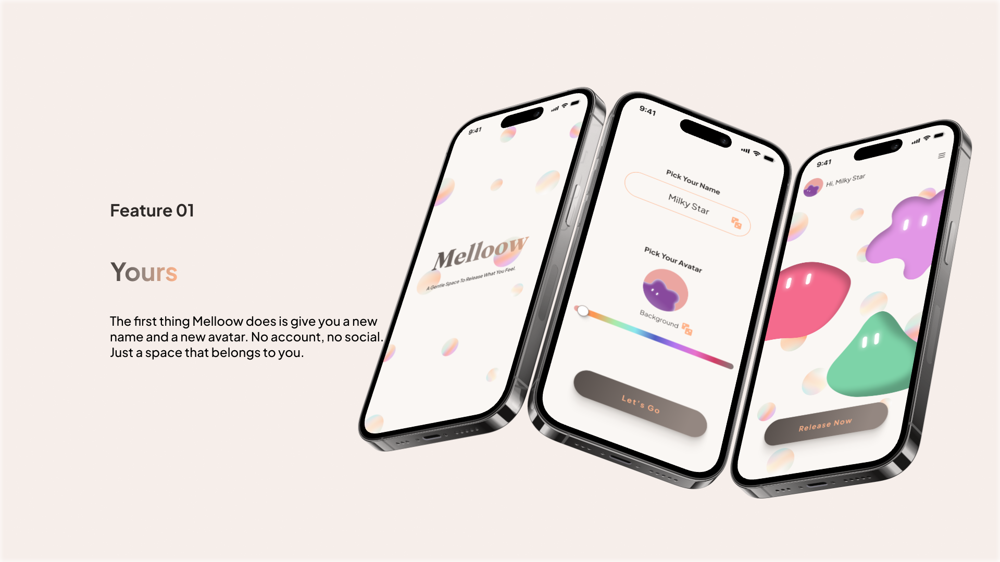
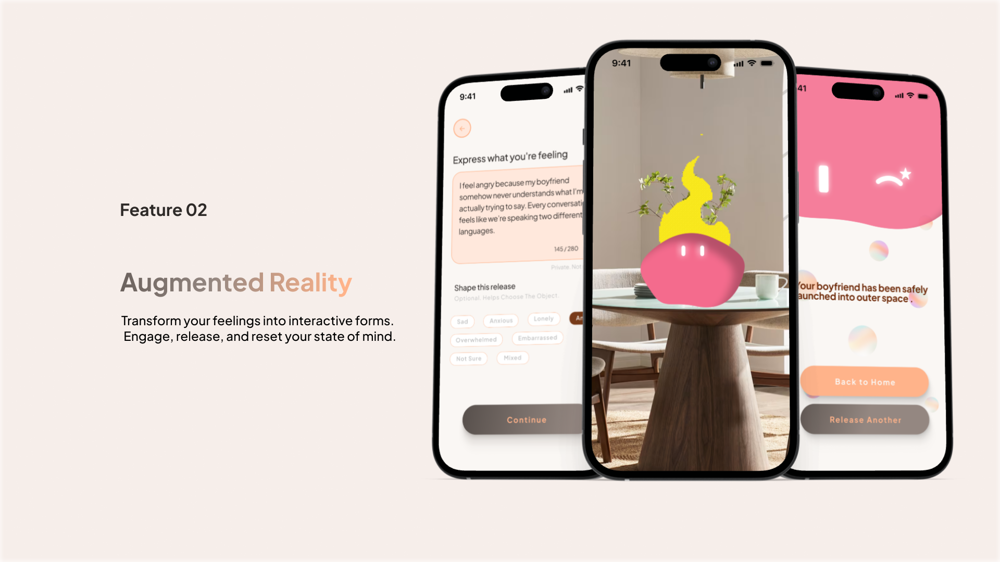
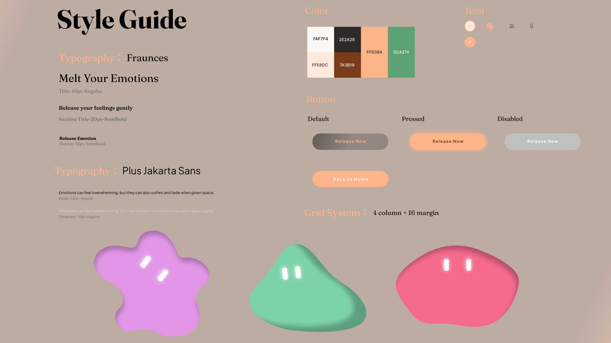
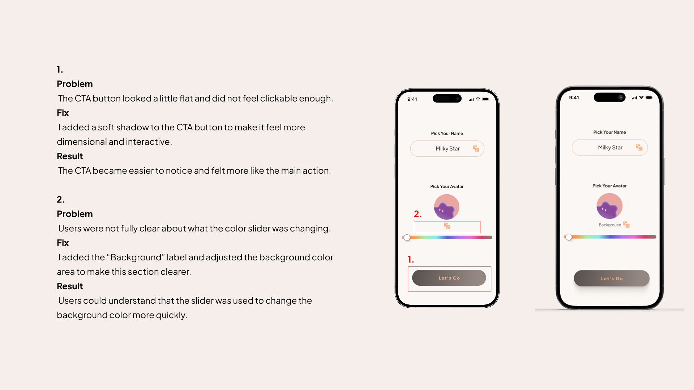

Melloow
Melt your emotions. An AR mobile app for anonymous emotional release, where feelings become physical objects you can throw away.
Overview
Melloow is a solo academic project completed over one semester. I handled every stage end-to-end: user research, concept development, UX design, visual design, and interactive prototype.
The project started with one question: how might we create a safe way for people to release emotions? Not process them publicly. Not share them with others. Just release them, privately, physically, completely.
The answer became an AR mobile app where users write or speak an emotional message, watch it become a physical object in their space, and throw it away.
Research
User research uncovered four consistent patterns in how people handle difficult emotions:
Emotional withholding is the default. More than half of participants chose not to share their emotional experiences, not out of strength, but out of uncertainty.
Sharing feels risky, not valuable. "They wouldn't understand." "I don't see a clear benefit." The perceived cost outweighed the potential relief.
Distraction replaces processing. Scrolling, music, and work were the most common coping strategies, avoidance dressed as self-care.
Relief is partial, not complete. Handling emotions alone offers temporary improvement, but the feeling always returns.

Key Insight
Emotional withholding is not always about independence. It often reflects uncertainty about emotional safety and the value of sharing.
The solution doesn't need to be social. It needs to feel safe and complete.

Who It's For
Lina appears successful and positive online, but privately, emotional pressure accumulates. She drafts messages about her feelings and deletes them. She avoids sharing to protect her public image. She needs an outlet that doesn't require anyone else to be involved.

"I know I'm doing well, so I feel like I shouldn't complain."
Lina Chen, 28 · TikTok Creator · 300K followersThe Solution
Melloow is an anonymous AR emotional release experience. The first thing it does is give you a new name and avatar. No account, no social. Just a space that belongs to you.
Then you write or speak what you're feeling. Your emotion becomes a physical object in your space. You throw it away. The body completes what the mind starts.


Design System
The visual language is intentionally soft: warm cream backgrounds, organic 3D blob shapes, and rounded pill buttons. Fraunces for display text, Plus Jakarta Sans for body. The palette pairs peach and mint, warm and calm, never clinical.

Iterations
Design decisions were refined through usability testing. Each iteration addressed a specific friction point identified during testing.
